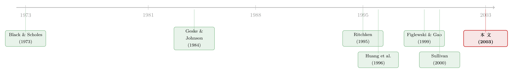

把期权定价从「一步一挪」解放出来：QUAD 与积分的胜利
本文读的是 Andricopoulos, Widdicks, Duck & Newton (2003, JFE)：他们提出一种叫 QUAD 的数值方法，把期权定价从树和有限差分那种「时间上必须密密麻麻一步一挪」的牢笼里解放出来——离散监测的奇异期权，两次观察之间只需一个时间步，节点可以精确落在「不连续点」上，于是步数翻一倍误差最多能降到 1/256，比既有方法快上几个数量级。
1 一个被忽视的算术常识
先讲一件几乎人人都知道、却很少有人认真追问的事。
任何一个买过期权定价教科书的人都见过两套数值方法：一套是格点法 (lattice)——二叉树、三叉树；一套是有限差分 (finite-difference)。它们的共同点是，把时间切成很多很多小片，然后从到期日往回，一格一格地把期权价值「倒推」回今天。树越密，差分网格越细，答案越准。
可这里藏着一笔让人不太舒服的账。用三叉树 (trinomial tree)，精度想翻一倍，计算量大约要翻四倍——因为它收敛速度只有 \(N^{-1}\)（\(N\) 是格数），有些情形甚至只有 \(N^{-1/2}\)。也就是说，你为了把误差砍掉一半，要付出四倍的时间；再砍一半，再四倍。对一个普通的欧式看涨期权，这无所谓，反正有 Black-Scholes 闭式解。但对那些没有闭式解的奇异期权——离散障碍 (discrete barrier)、回望 (lookback)、复合 (compound)、百慕大 (Bermudan)——这笔账会贵到让人望而却步。
于是一个自然的问题是：树和差分为什么这么慢？这篇论文的回答非常干脆——它们慢，是因为它们在解一件本不需要一步一挪去解的事。
2 两类误差：分布误差与非线性误差
要理解 QUAD 的巧劲，得先看清树和差分到底在和什么搏斗。作者把它们的误差拆成两类，名字起得很传神。
第一类叫分布误差 (distribution error)。股价被假设服从几何布朗运动 (geometric Brownian motion)，它的对数收益是连续的正态分布；可二叉树用的是离散的二项分布去逼近它。逼得不够细，就有误差。对付它的唯一办法就是把树加密——代价就是上一节那笔越来越贵的账。
第二类叫非线性误差 (nonlinearity error)。期权价值在某些标的价格处是「拐弯」的、不光滑的。普通欧式看涨期权只在到期日的执行价 \(E\) 处有这么一个拐点（payoff 的一阶导在那里从 0 跳到 1）。但奇异期权远不止一个：一个离散障碍期权，在每一道障碍处都有一个不连续。树的节点是事先排好的死格子，正好卡在拐点上的概率几乎为零，于是误差就从这些没对齐的拐点处渗进来。
过去二十年，一大批聪明人都在和第二类误差较劲——Boyle and Lau (1994)、Ritchken (1995)、Broadie and Detemple (1996)、Cheuk and Vorst (1996, 1997)、Leisen and Reimer (1996)——办法无非是想方设法移动节点，让格子尽量落在拐点上。可问题在于，奇异期权的拐点往往在不同时刻出现在不同的标的价位上，树的自由度根本不够：你没法让每一个时间步的节点都各自重新排队。Figlewski and Gao (1999) 的自适应网格模型 (adaptive mesh model, AMM) 是个值得一提的例外，但拐点一多，它就复杂到难以编程，而且——后文会看到——还是远比 QUAD 慢。
真正关键的一步在于：如果节点可以任意放置，这两类误差就能被同时收拾掉。 而要做到「节点任意放置」，你得先放弃「一步一挪」。
3 把 Black-Scholes 方程「解开」成一个积分
这就是 QUAD 的出发点，也是这篇方法论论文最该一步步讲清楚的地方。
起点是大家熟得不能再熟的 Black and Scholes (1973) 偏微分方程。标的资产服从几何布朗运动，期权价值 \(V(S,t)\) 满足（这里用的是论文勘误后的正确形式，详见 《corrigendum-to-universal-option-valuation-using-quadrature》 里那段「改的不是错别字」的故事）：
$$ \frac{\partial V}{\partial t} + \frac{1}{2}\sigma^2 S^2 \frac{\partial^2 V}{\partial S^2} + (r - D_c)\,S\,\frac{\partial V}{\partial S} - r V = 0 $$
其中 \(r\) 是无风险利率，\(\sigma\) 是波动率，\(E\) 是执行价，\(D_c\) 是连续股息率。
接着做两个标准的对数变换——注意，这是整套方法的灵魂所在：
$$ x = \log(S_t / E), \qquad y = \log(S_{t+\Delta t}/E) $$
\(x\) 是当前时刻 \(t\) 的（对数）标的，\(y\) 是下一观察时刻 \(t+\Delta t\) 的（对数）标的。这里有一句话作者特意加粗强调，也是 QUAD 全部威力的来源：\(\Delta t\) 不必是一个小时间段。它可以是任意长——只要这中间没有特殊事件发生。
然后，对于一个在 \(t+\Delta t\) 到期、终值为 \(V(y, t+\Delta t)\) 的欧式期权，热方程有一个精确解，写成对 \(y\) 的一重积分：
$$ V(x,t) = A(x)\int_{-\infty}^{\infty} B(x,y)\,V(y, t+\Delta t)\,dy $$
这里的两个核（同样取勘误后的正确形式）是
$$ A(x) = \frac{1}{\sqrt{2\sigma^2\pi\Delta t}}\;e^{-\,kx/2 \;-\; \sigma^2 k^2 \Delta t/8 \;-\; r\Delta t} $$
$$ B(x,y) = e^{-\,(x-y)^2/(2\sigma^2\Delta t)\;+\;ky/2}, \qquad k = \frac{2(r-D_c)}{\sigma^2} - 1 $$
看到 \(B(x,y)\) 里那个 \(e^{-(x-y)^2/(2\sigma^2\Delta t)}\) 了吗？这是一个高斯核——它的意思是，今天的价值 \(V(x,t)\)，是「下一时刻所有可能价位的期权价值」按正态概率加权的折现平均。这正是风险中性定价的积分形式。
下面把这个最核心的方程拆开来标注一下：
这个方程对纯欧式期权在全时段都成立；但对任何带特殊条款的期权，它只在「两次观察之间」局部成立。QUAD 的全部智慧就在这一句话里：把期权的生命切成「相邻观察点之间」的若干段，每一段内部都用上面这个精确积分一步跨过，只在观察点处施加期权的特殊条款（敲出、提前行权……）作为衔接。于是——
树和差分要在「两次观察之间」塞进成百上千个中间时间步；QUAD 在两次观察之间只用一个时间步。中间那一整段连续时间的随机性，被那个高斯核一次性精确积分掉了。
4 剩下的，只是「把一个积分算准」
把定价问题化成积分之后，期权定价就退化成了一个一维数值积分问题。论文用的是辛普森法则 (Simpson's rule)——古老（1743 年就有了）、简单、稳健，而且收敛极快：误差以 \((\delta y)^4\) 的速度下降（\(\delta y\) 是积分格距）。也就是说，积分点数翻一倍，误差降到 1/16。对比一下三叉树的 \(N^{-1}\)，高下立判。
$$ \int_{a_1}^{a_2} f(y)\,dy \approx \frac{\delta y}{6}\Big[ f(a_1) + 4f(a_1+\tfrac12\delta y) + 2f(a_1+\delta y) + \cdots + f(a_2)\Big] $$
但辛普森法则有个前提：被积函数得光滑。而期权 payoff 在执行价处恰恰不光滑（看涨期权的一阶导在 \(S=E\) 处从 0 跳到 1）。这正是第二类「非线性误差」的根。
于是真正关键的一步出现了，也是 QUAD 区别于树的地方：把积分从拐点处一刀切成两段。对看涨期权，就在 \(y=0\)（即 \(S=E\)）处切开——左边那段 payoff 恒为零、对积分毫无贡献，右边那段则完全光滑。因为节点可以任意放置，所以这一刀永远能精确落在拐点上，非线性误差被彻底铲除，而不是像树那样只能「尽量靠近」。
还有一个收尾的小技巧：积分的 \(y\) 区间本是双向无穷的，但高斯核衰减极快，所以只需截到「一个时间步内标的上下移动十个标准差」即可，\(q = 10\sigma\sqrt{T}\)。十个标准差之外的概率小到可以忽略。
把非线性误差清零还带来一个意外红利：外推 (extrapolation) 现在可以放心用了。用两个格距 \(\delta y_1, \delta y_2\) 各算一次得 \(V_1, V_2\)，再按
$$ V_{ext} = \frac{(\delta y_1)^d V_2 - (\delta y_2)^d V_1}{(\delta y_1)^d - (\delta y_2)^d} $$
外推（辛普森法则取 \(d=4\)）。于是收敛阶被进一步推高：计算时间增四倍，精度提升 256 倍。
数字最有说服力。论文表 1 用 16 个不同参数的欧式看涨期权做基准对比：基础三叉树 TRIN 在 \(N=1000\) 格时，绝对均方根误差是 0.0006004，耗时 0.14 秒；而 QUAD 在 \(K=40\)（对应每步约 40 个积分点）时，误差已经压到 0.0000000（七位小数全为零），耗时 0.00 秒——快到计时器都测不出来。哪怕是未外推、对照组的 QUAD，在 \(K=10\) 时误差也只有 0.0002466，已经胜过 \(N=2000\) 的三叉树（0.0004057）。
对那些真正难啃的对象，差距更夸张。作者宣称，定价一个「固定执行价回望 + 离散障碍」这类复杂期权，QUAD 能比既有方法快上几个数量级 (orders of magnitude)——而回望期权恰恰是过去数值方法收敛得最慢、最让人头疼的一类。
5 文献脉络
把这条线索捋一捋，QUAD 的位置就清楚了。
源头当然是 Black and Scholes (1973)——它给出的不只是那个著名公式，更是一条偏微分方程，以及（对欧式期权而言）一个可以写成积分的精确解。这是 QUAD 的「地基」。
接着，一个自然的问题是：能不能干脆把期权写成嵌套积分直接算？Geske and Johnson (1984) 用一组多元积分解析地给美式看跌期权定价，思路很漂亮，但嵌套积分一旦超过四重，计算量就爆炸。Huang, Subrahmanyam and Yu (1996) 改用一维积分配合 Richardson 外推达到同样效果，可受限于复杂度，他们最多只敢用三个观察时点。Sullivan (2000) 也尝试用高斯求积处理美式看跌，但作者评价说做得「有些启发式 (heuristically)」、不够系统。

与此同时，另一条线在死磕「节点对齐」以削减非线性误差——Ritchken (1995)、Cheuk and Vorst (1996, 1997)、Broadie and Detemple (1996)、Leisen and Reimer (1996)，直到 Figlewski and Gao (1999) 的自适应网格。但它们始终被「一步一挪」的框架束缚着。
这篇论文的自我定位很明确：它是据作者所知，第一篇把求积 (quadrature) 当作一个灵活、稳健、近乎普适的期权定价工具来系统呈现的工作。它接住了 Geske-Johnson 那条「积分定价」的线，又用「节点任意放置 + 拐点精确切分」一举解决了另一条线苦苦追求的对齐问题。作者自己的预备工作 Andricopoulos et al. (2001) 和 Widdicks et al. (2002) 则是它的直接前身。
（顺带一提，把期权定价的「积分核」思路推到底，后来还长出了不少分支——比如把跳跃与随机波动塞进一只会变速的钟里，可参见《把「跳跃、波动、杠杆」三件事，交给一只会变速的钟》；以及用神经网络把整张定价曲面「蒸馏」成查找表的《把结构模型「蒸馏」成一张查找表》。它们和 QUAD 共享同一个母题：定价的本质是一次加权积分。）
6 评论与延伸（Q&A + 研究方向）
(a) 几个可能的疑问
Q：QUAD 和「蒙特卡洛」「树」「有限差分」到底什么关系？是第四类方法吗？
作者的定位是：它自成一类，但和「多项式格点」最像——同样是从到期日往回、在节点上倒推价值。区别有两点：节点可任意放置；相邻观察点之间只要一个时间步。它和有限差分也沾边（都在解同一个 PDE），但有限差分必须密铺时间网格，QUAD 不必。可以理解成一棵「完美的树」。
Q：「两次观察之间只要一步」听起来太好了，代价藏在哪？
代价在于，QUAD 依赖那个解析积分核 \(A(x)B(x,y)\) 的存在——它来自常系数、几何布朗运动下的 Black-Scholes PDE。一旦波动率随机、或利率随机、或标的过程不再有这种闭式转移密度，「一步跨过」就失效了，你又得回到把时间切细。论文里漂亮的例子全都建立在「分段内是标准 BS 世界」这个前提上。
Q：那个 \(q=10\sigma\sigma\sqrt{T}\) 的十倍标准差截断，会不会在极端参数下出问题？
作者诚实地承认这假设了 \((r-D_c)\) 不会大得离谱，否则分布会被漂移推偏、十个标准差未必兜得住，需要做例行调整。对常规参数，十个标准差之外的概率确实小到可忽略，但深度价内/价外、超长期限、或极端利率差的情形值得单独验证。
Q：辛普森法则号称 \((\delta y)^4\) 收敛，可 payoff 不光滑，这个阶不会被破坏吗？
正是这篇论文的关键。\((\delta y)^4\) 只对光滑函数成立。QUAD 通过「在拐点处精确切分积分」恢复了每一段的光滑性，从而把理论收敛阶真正拿回手里——这也是它敢用外推（\(d=4\)，256 倍提升）的底气。树做不到精确对齐，所以它的高阶收敛是「纸面上的」。
Q：表 1 里 QUAD 的误差显示为 0.0000000，是真的零吗？
是「在七位小数精度下与闭式解无法区分」，不是数学上的零。对欧式看涨这种有闭式解的情形，这只是验证求积模块的准确性；论文真正的卖点是那些没有闭式解的奇异期权，那里没有「标准答案」可比，只能靠收敛性和跨方法一致性来佐证。
Q：它能处理美式（连续提前行权）和连续监测障碍吗？毕竟那些不是「离散观察」。
能，但要绕一下。连续特征通过「离散监测 + 外推到监测频率趋于无穷」来逼近；美式提前行权点的位置 \(b_m\) 用 Newton-Raphson 迭代去求解（论文给了百慕大看跌的原型推导）。亚式、多标的等还留给了后续论文。所以严格说，QUAD 的母语是「离散监测」，连续是它的外推极限。
(b) 几个可能的研究问题与提案
1. 把 QUAD 搬到公司债与信用衍生品的「结构模型」定价上
【经济故事】结构化信用模型（Merton 类、首达时间类）本质就是一连串「障碍 + 提前事件」的期权定价问题——违约就是一道障碍被击穿。可转债、含赎回/回售条款的公司债，更是天然的离散监测奇异期权。QUAD 的「节点精确落在障碍上」恰好对治这类模型里最难的非线性。（这条思路与《公司随时都可能倒下，期权定价却只盯着还债那一天》的关切相通。）
【可行性】中。数学迁移是直接的（信用利差 ≈ 障碍期权价差）；难点在标的过程一旦引入随机利率/随机违约强度，解析核就破，需要找近似的分段转移密度。doable，但要在「精度」和「保住一步跨过」之间做取舍。
2. 用 QUAD 给一篮子离散监测期权做大规模收敛性基准库
【经济故事】期权定价的实证文献长期受困于「没有真值」——比较模型优劣时，连参照系都是带误差的。QUAD 在离散监测奇异期权上能逼到机器精度，正好可以充当「准解析」的金标准，去校准蒙特卡洛、深度学习定价器的偏差。
【可行性】高。纯计算工作，不需要新数据，论文附录甚至给了伪代码。直接产出一个可复现的 benchmark suite，对方法论社区价值明确。
3. 把「损失函数错配」问题搬到 QUAD 的校准上
【经济故事】数值方法的精度，和「用它来校准模型时用什么目标函数」是两回事。有文献指出，估计期权模型时选错损失函数会系统性地扭曲结果（见《估的时候用一把尺，量的时候换另一把》）。QUAD 让定价误差几乎归零，正好提供一个「定价误差可忽略、只剩损失函数效应」的干净实验台。
【可行性】中。需要把 QUAD 嵌进一个完整的校准回路并设计对照实验；识别清晰（定价误差被压到噪声以下），但工程量不小。
4. 检验 QUAD 在「移动障碍」与监管触发条款上的优势
【经济故事】现实中的障碍常常是「会动的」——盯市保证金线、随时间调整的契约阈值、央行的合格抵押品边界。论文示意图里的 down-and-out 移动障碍正是 QUAD 的招牌场景，因为每道障碍都能被节点精确命中。把它用到真实的、随时间漂移的合约触发条款上，是一个被低估的应用面。
【可行性】中到高。方法现成，关键是找到条款明确、阈值路径可观测的真实合约（结构化票据、CoCo 债）来做实证定价对照。
7 我的判断
贡献。这是一篇「方法换框架」的论文，分量在于它换掉了一个被默认了几十年的前提：定价不必在时间上一步一挪。把 Black-Scholes PDE 的精确积分解，配上「节点任意放置 + 拐点精确切分 + 外推」，QUAD 同时干掉了分布误差和非线性误差这两个老对手，在离散监测奇异期权上拿到了几个数量级的提速。它简单到附录能塞下完整源码——这种「又快又准又好写」的组合在数值金融里并不多见。
对（数值）识别的担忧。这篇论文没有计量识别问题，但有它自己的「识别边界」：QUAD 的全部威力寄生于那个解析转移核的存在，而这个核来自常系数 BS 世界。一旦你想要随机波动、随机利率、或非高斯标的，「一步跨过」就退化，优势会被侵蚀——而真实市场恰恰处处是随机波动。论文用欧式闭式解验证精度，对那些真正无闭式解的展示则缺少独立真值，只能靠收敛性自证，读者需要保留一分谨慎。此外，连续监测、美式、亚式都是靠「离散 + 外推」逼近的，外推在病态参数下是否稳健，论文着墨不多。
后续想看到什么。其一，把 QUAD 系统性地压到随机波动率（Heston 类）框架下，诚实地标出「一步跨过」失效的临界点在哪。其二，一个公开、可复现的奇异期权基准库，用 QUAD 当金标准去给现在满天飞的「深度学习定价器」做体检。其三，把它真正落到公司债/可转债这类离散触发的信用工具上——那里既有最难的非线性，也有最现实的需求。一个 2003 年的纯数值方法，今天读来仍不过时，靠的正是它抓住了定价最朴素的本质：一次精确的加权积分，胜过一千个手忙脚乱的小时间步。
参考文献
Andricopoulos, A. D., Widdicks, M., Duck, P. W., Newton, D. P. (2003). Universal option valuation using quadrature methods. Journal of Financial Economics 67(3), 447–471.
Andricopoulos, A. D., Widdicks, M., Duck, P. W., Newton, D. P. (2004). Corrigendum to "Universal option valuation using quadrature methods". Journal of Financial Economics 73(3), 603.
Black, F., Scholes, M. (1973). The pricing of options and corporate liabilities. Journal of Political Economy 81, 637–659.
Boyle, P. P., Lau, S. H. (1994). Bumping up against the barrier with the binomial method. Journal of Derivatives 1, 6–14.
Broadie, M., Detemple, J. (1996). American option valuation: new bounds, approximations, and a comparison of existing methods. Review of Financial Studies 9, 1211–1250.
Cheuk, T. H. F., Vorst, T. C. F. (1996). Complex barrier options. Journal of Derivatives 4(1), 8–22.
Cheuk, T. H. F., Vorst, T. C. F. (1997). Currency lookback options and observation frequency: a binomial approach. Journal of International Money and Finance 16(2), 173–187.
Figlewski, S., Gao, B. (1999). The adaptive mesh model: a new approach to efficient option pricing. Journal of Financial Economics 53, 313–351.
Geske, R., Johnson, H. E. (1984). The American put valued analytically. Journal of Finance 39, 1511–1524.
Huang, J., Subrahmanyam, M., Yu, G. (1996). Pricing and hedging American options: a recursive integration approach. Review of Financial Studies 9, 277–300.
Leisen, D. P. J., Reimer, M. (1996). Binomial models for option valuation—examining and improving convergence. Applied Mathematical Finance 3, 319–346.
Ritchken, P. (1995). On pricing barrier options. Journal of Derivatives 3, 19–28.
Sullivan, M. A. (2000). Valuing American put options using Gaussian quadrature. Review of Financial Studies 13(1), 75–94.
Widdicks, M., Andricopoulos, A. D., Newton, D. P., Duck, P. W. (2002). On the enhanced convergence of lattice methods for option pricing. Journal of Futures Markets 22(4), 315–338.